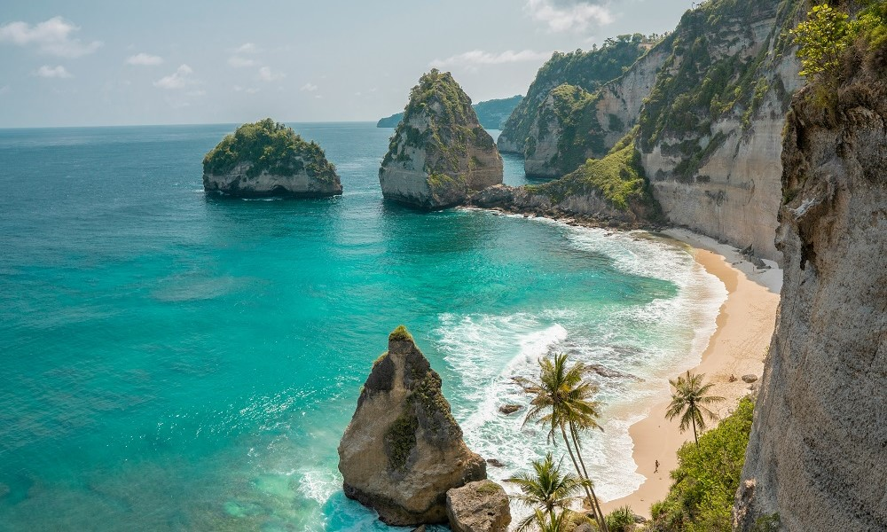
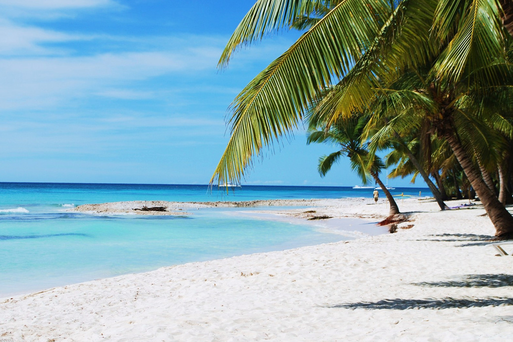

Одна з найулюбленіших українцями країн порадує навесні літньою погодою, теплим морем і красивою природою.
Рекомендуємо вибирати Шарм-еш-Шейх: тут менш вітряно завдяки гір навколо, і навіть на початку квітня,
коли погода нестабільна, буде цілком комфортно.
Погода навесні: до середини квітня вона досить мінлива, а далі починається чудовий час — вітру стихають,
прохолода ночами відступає. Вдень на вас чекають стабільні +28 °C, вода прогріта до +24 °C. Чим ближче до червня,
тим спекотніше.
Індонезія, Балі

Той самий чарівний острів, що омивається водами Індійського та Тихого океанів, приваблює туристів завжди.
Навесні тут якраз починається високий сезон, а травень взагалі вважається одним із найкомфортніших місяців для
поїздки. Вирушайте на пляжі модного курорту Нуса-Дуа, містичний Убуд або популярну Куту, добре буде скрізь.
Погода навесні: у травні закінчується сезон дощів, і настає дуже комфортний час - вологість повітря більше не
перевищує всі можливі норми, а температура тримається в районі розумних +28 ° C, а вода всього на градус-другий
прохолодніше.
Домініканська Республіка

Високий сезон у цій далекій країні триває з жовтня до квітня, але це не означає, що в травні
туди краще не їхати. Навпаки, дощі йдуть ще не так часто, а ось ціни на готелі приємно знижуються.
Одним із найкращих курортів країни вважається Ла-Романа: тут найкрасивіші пляжі в країні.
Погода навесні: з другої половини квітня погода псується, частіше йдуть дощі (але зазвичай уночі),
а до ураганів, якими лякають туристів, ще далеко. Вдень близько +30 °C, вода майже такої ж температури,
тому купатися дуже приємно.